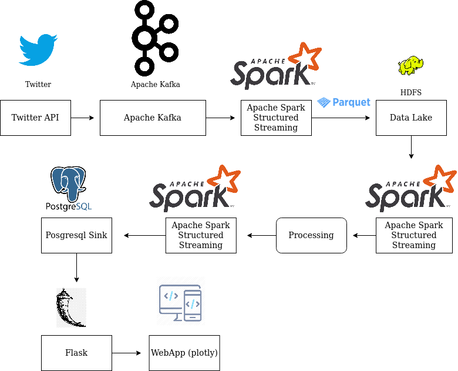

Trending Twitter Hash Tags¶
Requirements¶
Read raw twitter data from Bronze lake
Extract all hash tags in a new column
Store the hash tags in Postgresql DB table
Design a simple naive dash board with Bar charts for trending tweets
Implementation¶
Read the Bronze lake parquet raw data into Spark Structured input stream
Create a new column with
UDFto extract the hash tags and useexplodeon array of hash tags to create new row for each hashtagWith
foreachParitionAPI, dump the data into Postgresql DB tableIn Flask backend read the data from Postgresql DB table
Use plotly to create Bar chart and display it on the HTML page
Below is the data flow path:
Bronze Lake/Live Stream -> Spark Structured Streaming Parquet Source -> Extract Hash Tags with UDF -> Spark Structured Streaming Postgresql Sink
Postgresql -> Flask REST API -> Web Application

How to run?¶
There are two ways of running, that is on docker or on your local machine. In either case, opening the terminal is the difference, once the terminal is launched, the steps are common.
To get a new terminal for our docker instance run : docker exec -it $(docker ps | grep sparkstructuredstreaming-pg | cut -d' ' -f1) bash
Note: We pull our container run id with $(docker ps | grep sparkstructuredstreaming-pg | cut -d' ' -f1)
This example needs two terminals:
Hashtag bin/trending_tweet_hashtags.sh
Bronze Lake -> Spark Structured Streaming Parquet Source -> Extract Hash Tags with UDF -> Spark Structured Streaming Postgresql Sink
Dashboard bin/flask/trending_hashtags_dashboard.sh
Postgresql -> Flask REST API -> Web Application
cd /path/to/spark-streaming-playground/ # Local machine
cd /host # Docker
#[producer] Guake terminal name!
bin/data/start_kafka_producer.sh
#[hashtag] Guake terminal name!
bin/analytics/trending_tweet_hashtags.sh
#[dashboard] Guake terminal name!
bin/flask/trending_hashtags_dashboard.sh
Head to http://0.0.0.0:5001/ for live count on the trending #hashtags

For people who are looking for more advanced dashboard can refer these links:
https://medium.com/analytics-vidhya/building-a-dashboard-app-using-plotlys-dash-a-complete-guide-from-beginner-to-pro-61e890bdc423
https://towardsdatascience.com/how-to-build-a-complex-reporting-dashboard-using-dash-and-plotl-4f4257c18a7f
https://github.com/Chulong-Li/Real-time-Sentiment-Tracking-on-Twitter-for-Brand-Improvement-and-Trend-Recognition (TODO)
http://davidiscoding.com/real-time-twitter-analysis-4-displaying-the-data